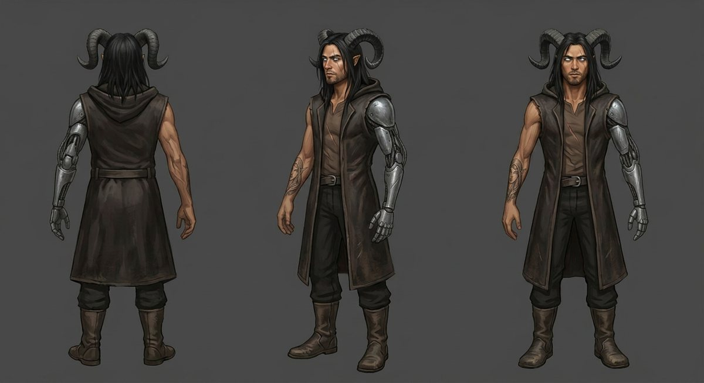
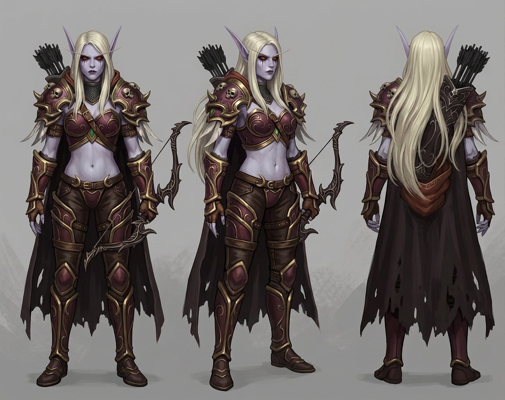
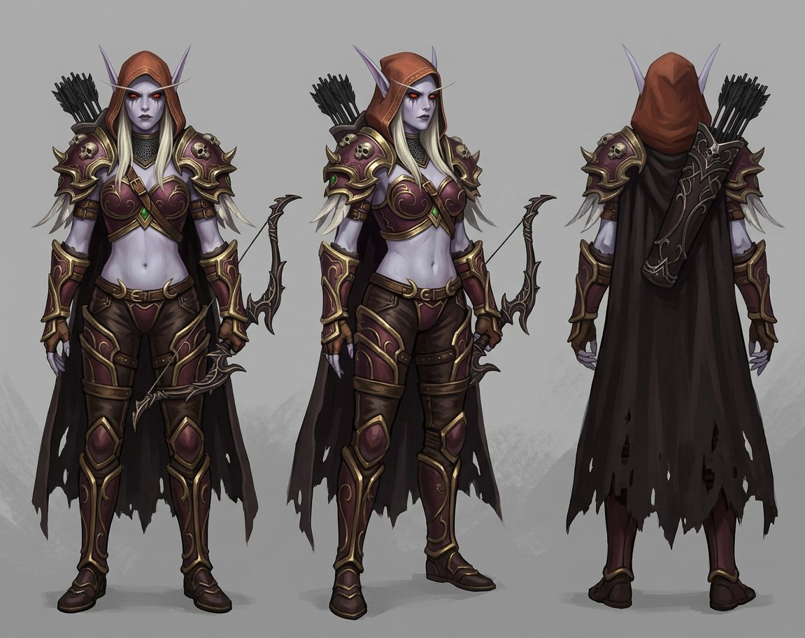

Personagens

Nathan
Humano · do outro mundo
Jogava World of Warcraft havia anos quando adormeceu no próprio quarto e acordou na Gorja de pijama e uma meia só. Trouxe consigo caratê desde os oito anos, o hábito de sentar de frente para a porta e o rosto de Sylvanas tatuado no antebraço direito.
- Braço esquerdo perdido durante o ano de desaparecimento
- Prótese articulada construída por ele mesmo — a oitava, feita a quatro mãos
- Tatuagem do rosto de Sylvanas no antebraço direito, natural
- Chifres e asas de energia do Vazio — sem uma única pena
- Sobretudo escuro sem mangas, sem capa, capuz integrado à gola
- Sob o capuz erguido só aparecem dois pontos de luz azul

Sylvanas Windrunner
Banshee · penitência na Gorja
Procura e liberta almas injustamente condenadas. Reservada, exata, incapaz de pedir qualquer coisa — porque tudo o que pediu na vida ela acabou tomando quando não lhe deram. Conta tudo: dias, setores, flechas, segundos de silêncio e sorrisos.
- Trezentos e sessenta e um dias procurando Nathan sem prova de que estivesse vivo
- Admitiu para si mesma no dia 304 da busca
- Não percebeu por sete meses que Varokh e Elyra eram um casal
- Larga o arco uma única vez em toda a história
- Ri de verdade quatro vezes — e ele conta todas

Varokh
Orc morto-vivo · o centro da linha
Quatrocentos anos, pragmático, humor seco e uma capacidade quase ofensiva de entender as pessoas antes delas. Segura a passagem, resmunga, e percebeu a aproximação dos dois na primeira noite.
- Perdeu a aposta sobre quanto tempo os dois demorariam — e achou que valeu
- Abandonou a posição uma vez, por Elyra
- Só puxou Nathan para uma conversa a sós uma vez em toda a história

Elyra
Elfa noturna · a que fala
Habilidosa, perceptiva, alta demais para aquele lugar. Carrega objetos que não fazem o menor sentido carregar há oitenta anos — o que se revelou providencial.
- Formou casal com Varokh durante o ano da busca
- Ensinou Nathan a lançar facas; ele foi horrível por duas semanas
- Segurou a tábua para que ele pregasse reto pela primeira vez em um ano

O Colecionador
Desconhecido · educado
Coleciona coisas que não deveriam existir onde existem. Abriu a porta que trouxe Nathan, corrigiu o próprio erro no poço, pede desculpas por um braço com a cortesia de quem ajusta uma conta.
- A projeção foi destruída; ele não estava dentro dela
- Levou dois anos para abrir a primeira porta
- Observou o ano inteiro de Nathan e não entendeu nada
Fichas de referência
Modelos usados para manter os personagens idênticos em todas as ilustrações.


